Dual-Logistic Model for RR Interval Dynamics (Castillo-Aguilar et al.)
Source:R/dual_logistic.R
dual_logistic.RdThis function implements a dual-logistic model to capture the dynamic behavior of RR intervals (RRi) during exercise and recovery, as described in Castillo-Aguilar et al. (2025). The model is designed to account for the rapid drop and subsequent recovery of RRi values by combining two logistic functions. This formulation allows for a robust characterization of the non-linear fluctuations in RRi signals, which is critical for accurate cardiovascular monitoring and analysis.
Arguments
- t
A numeric vector of time points.
- params
A named numeric vector of parameters, which must include:
- alpha
The baseline RRi level.
- beta
The amplitude parameter for the drop phase.
- lambda
The rate parameter controlling the steepness of the drop.
- tau
The time center of the drop phase.
- c
A scaling factor for the recovery phase.
- phi
The rate parameter controlling the steepness of the recovery.
- delta
The time offset for the recovery phase relative to
tau.
Details
The model is defined as:
$$ RRi(t) = \alpha + \frac{\beta}{1 + \exp\{\lambda (t-\tau)\}} - \frac{c \, \beta}{1 + \exp\{\phi (t-\tau-\delta)\}}, $$
where:
- \(\alpha\)
is the baseline RRi level.
- \(\beta\)
controls the amplitude of the drop phase.
- \(\lambda\)
controls the steepness of the drop phase.
- \(\tau\)
defines the time at which the drop is centered.
- \(c\)
scales the amplitude of the recovery phase relative to \(\beta\).
- \(\phi\)
controls the steepness of the recovery phase.
- \(\delta\)
shifts the recovery phase in time relative to the drop phase.
This dual-logistic model is defined following the approach described in Castillo-Aguilar et al. (2025), and is specifically tailored for RRi signal analysis in contexts where exercise-induced changes and recovery dynamics are of interest. The model combines two logistic functions, one representing the drop in RRi and one representing the recovery, allowing for an accurate fit even in the presence of non-linear fluctuations. Attribution to Castillo-Aguilar et al. (2025) is provided to recognize the original methodology that inspired this implementation.
References
Castillo-Aguilar, et al. (2025). Enhancing Cardiovascular Monitoring: A Non-linear Model for Characterizing RR Interval Fluctuations in Exercise and Recovery. Scientific Reports, 15(1), 8628.
Examples
# Define example parameters based on Castillo-Aguilar et al. (2025)
params <- list(alpha = 1000, beta = -380, lambda = -3, tau = 6,
c = 0.85, phi = -2, delta = 3)
# Simulate a time vector
t <- seq(0, 20, length.out = 150)
# Compute the dual-logistic model values
RRi_model <- dual_logistic(t, params)
# Plot the resulting model
plot(t, RRi_model, type = "l", col = "blue",
main = "Dual-Logistic RRi Model (Castillo-Aguilar et al.)",
xlab = "Time", ylab = "RR Interval (ms)")
